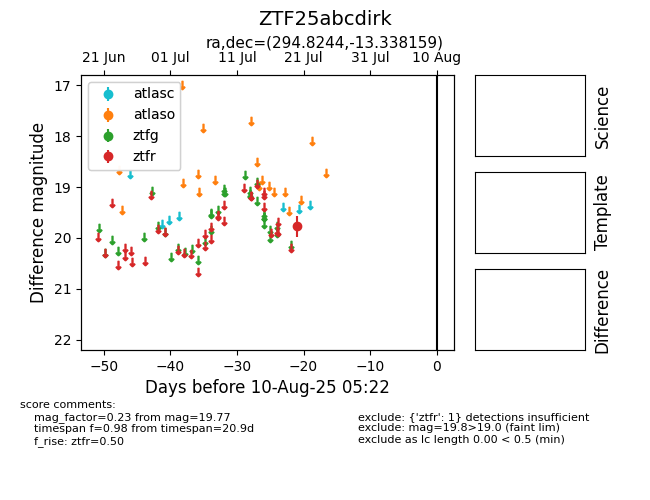

Target ZTF25abcdirk at 2025-08-10 05:22, see:
FINK: fink-portal.org/ZTF25abcdirk
Lasair: lasair-ztf.lsst.ac.uk/objects/ZTF25abcdirk
ALeRCE: alerce.online/object/ZTF25abcdirk
alt names
ZTF25abcdirk (ztf,fink)
coordinates:
equatorial (ra, dec) = (294.8244,-13.33816)
galactic (l, b) = (26.1419,-16.54234)
photometry
last ztfr=19.77
1 ztfr detections
